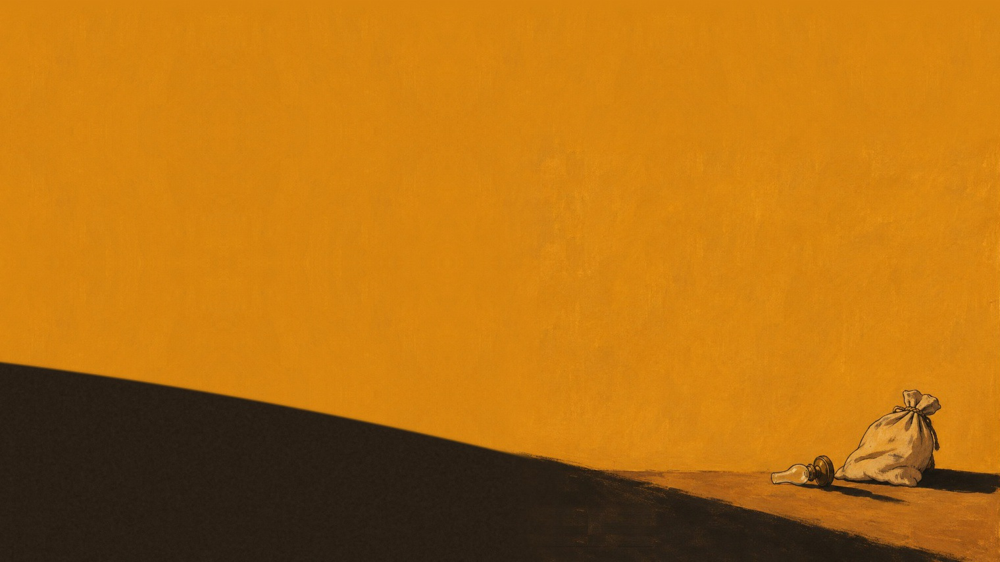
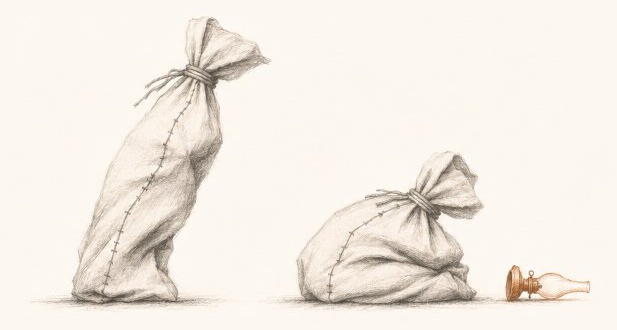

Compare takesTwo faceless flour sacks, one oil lamp, seventy-seven identical opening frames, and one patched line of intent—reaching to steady a neighbour versus striking the lamp.
Visual plates across every edition, proof sheet, and stagecraft still, followed by the complete file-by-file ledger of this repository ( files).
Every HTML view, MP4 take, PNG/JPG/SVG/ICO plate, PDF paper, Markdown note/zettel, JSON trace, script, and zip archive.
| Path | Contents | Group | Size |
|---|
Loading…